L'accesso non autorizzato a dispositivi informatici si verifica quando una persona accede a un sistema informatico, rete o dati senza permesso. Questo comportamento può avere gravi conseguenze legali e di sicurezza.
Cosa dice la legge:
- L'articolo 615-ter del Codice penale punisce chiunque si introduce abusivamente in un sistema informatico o telematico protetto da misure di sicurezza, o vi si mantiene contro la volontà 1 di chi ha il diritto di escluderlo.
- Le pene variano a seconda della gravità del reato, ma possono arrivare fino a diversi anni di reclusione.
Come avviene l'accesso non autorizzato:
- Utilizzo di credenziali rubate o ottenute illegalmente.
- Sfruttamento di vulnerabilità nei sistemi di sicurezza.
- Installazione di software dannoso (malware).
- Attacchi di phishing per ingannare gli utenti e ottenere informazioni sensibili.
Conseguenze:
- Furto di dati personali e finanziari.
- Danni ai sistemi informatici.
- Interruzione di servizi.
- Responsabilità penale.
Come proteggersi:
- Utilizzare password complesse e uniche.
- Mantenere aggiornati i software e i sistemi operativi.
- Installare un buon antivirus e firewall.
- Fare attenzione ai messaggi di posta elettronica e ai link sospetti.
Per ulteriori approfondimenti, puoi consultare queste risorse: